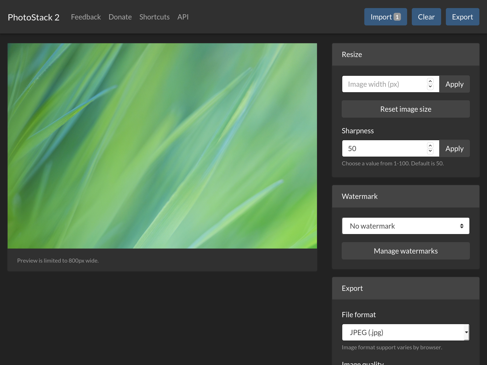
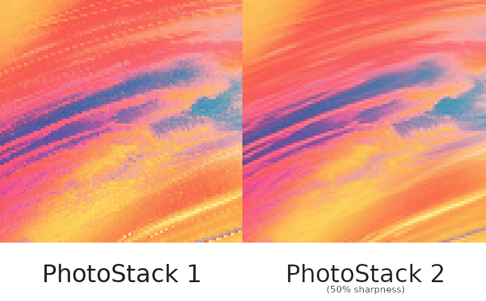
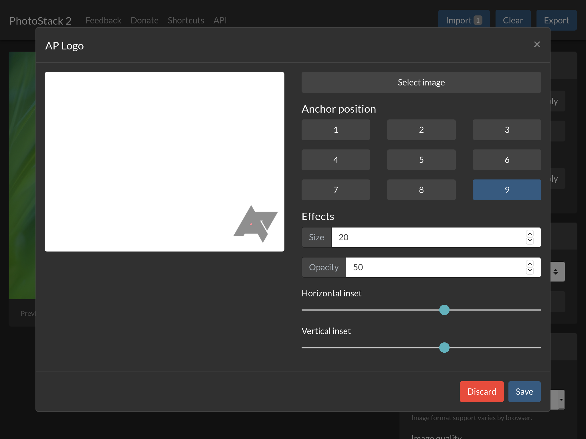
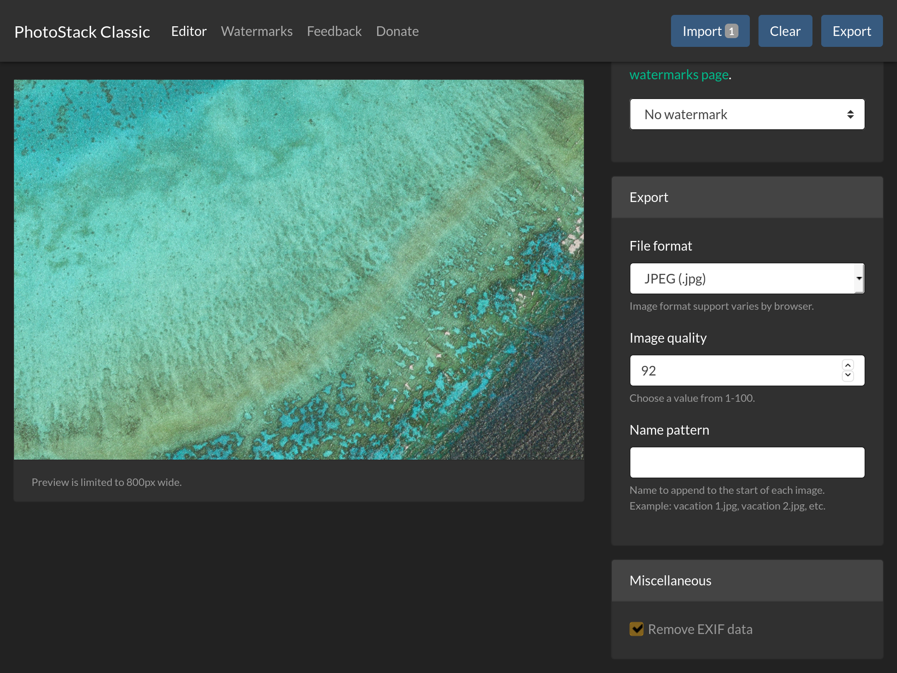

I finished the first version of PhotoStack back in May 2019, after a few months of development. It’s a batch photo editor with the ability to make changes to many images at once, including adding watermarks, changing the file name and image format, removing EXIF data, and more.
PhotoStack has become my most successful web application, and has been covered by outlets like Android Police (mostly because I work there), MakeUseOf, TekCrispy, and others. Today, I’m super happy to announce that PhotoStack 2 is out of beta!

PhotoStack 2 may look very similar to the existing version, but it has been significantly re-written to take better advantage of newer browser features like JavaScript Promises. It’s now a single-page web app, and thanks to Promises, the interface is more responsive during intensive tasks (like exporting).
The main improvement to the editor is that images are now resized using Pica.js, which means photos scaled down in size will no longer appear heavily pixelated. The pixelation effect on earlier versions of PhotoStack was especially noticeable with screenshots and images with text watermarks. There’s also a new sharpness setting for the resize function.

The watermark editor has also been significantly overhauled. Clicking the ‘Manage watermarks’ button in the main editor now opens a popup containing a list of all saved watermarks - along with edit, delete, and export buttons for each. Also, you can now import multiple watermark files at once.

Other improvements in PhotoStack 2 include: keyboard shortcuts, printing support for previews, improved support for Safari, an icon badge for completed exports (only on Chrome, for now), a progress bar for exports, a ‘Clear’ button for clearing imported images, and lots of bug fixes.
Because PhotoStack 2 requires newer browser features, I’m also releasing PhotoStack Classic. The Classic app is a continuation of the 1.x codebase, so it works in browsers as old as Internet Explorer 10, while also containing some improvements from 2.x (like the Clear button). PhotoStack Classic will continue to be supported, and watermark files created in 2.0 can be opened in Classic, and vice-versa.

You can try out PhotoStack at photostack.app. There’s also an Android app available, which is in the process of being updated to 2.0.